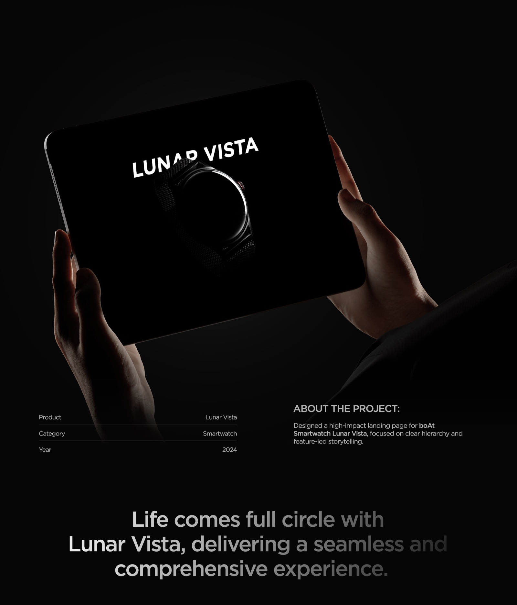
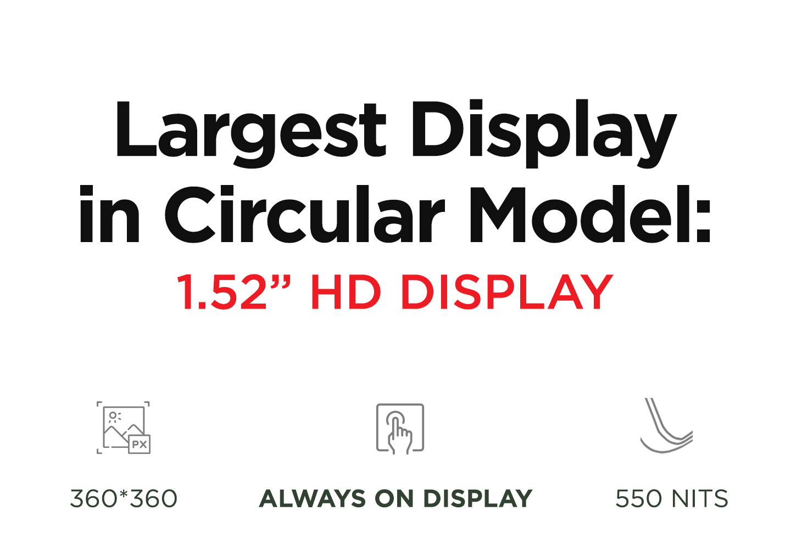
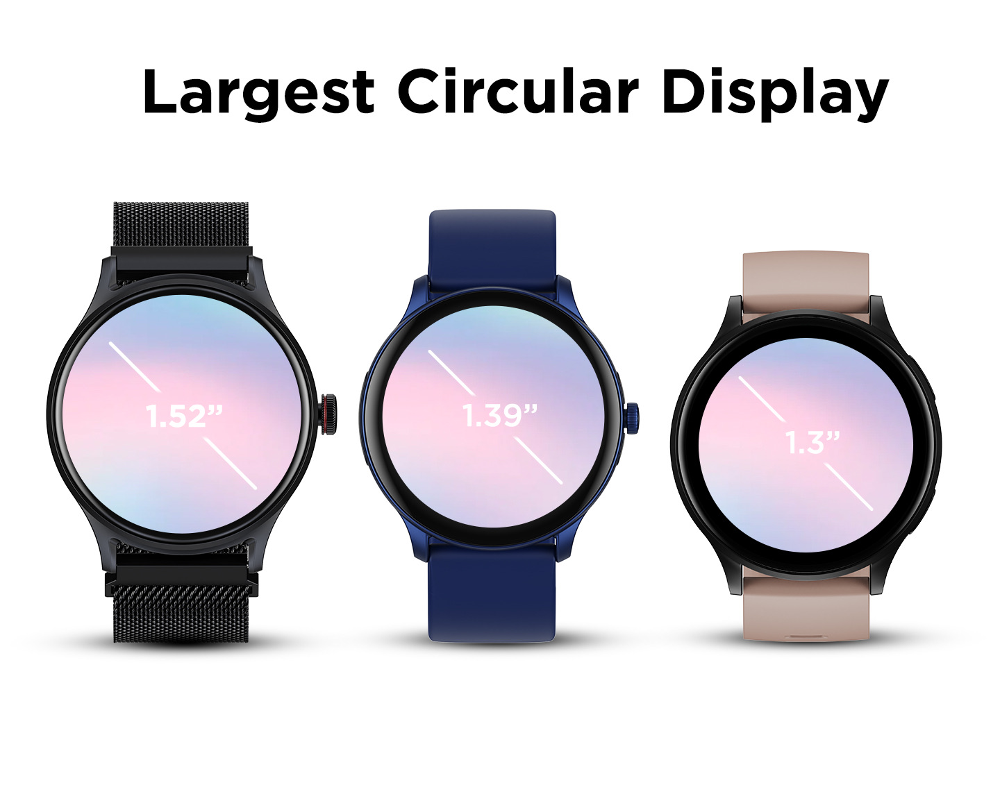
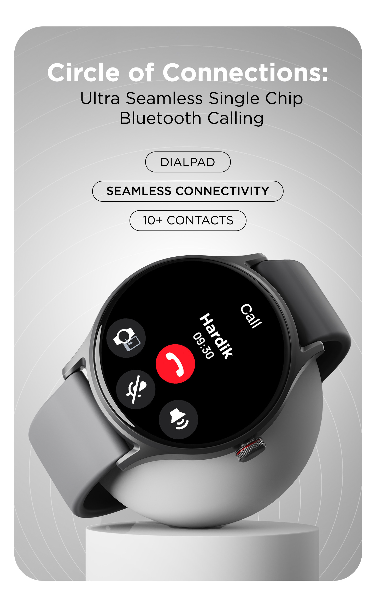
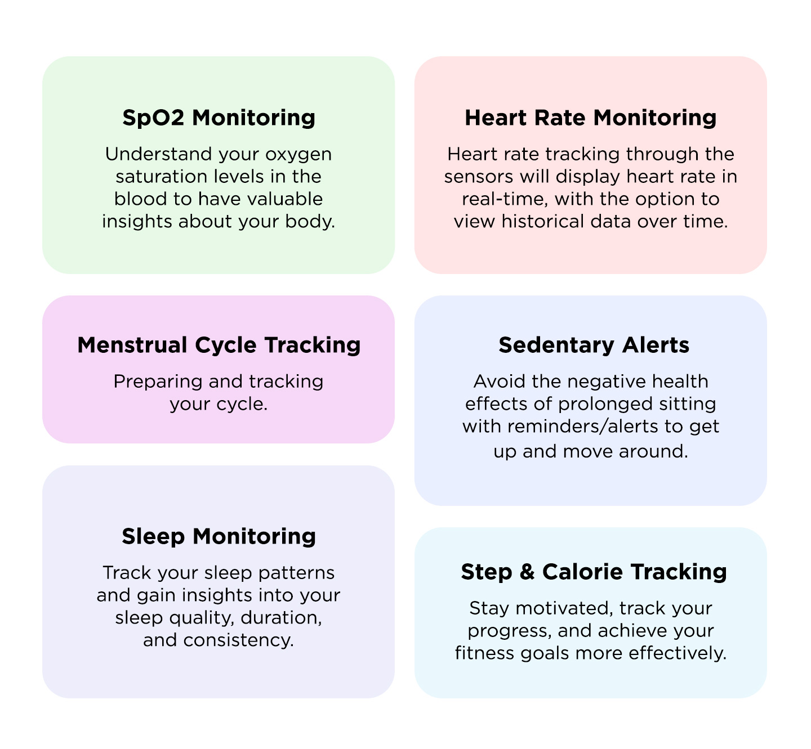
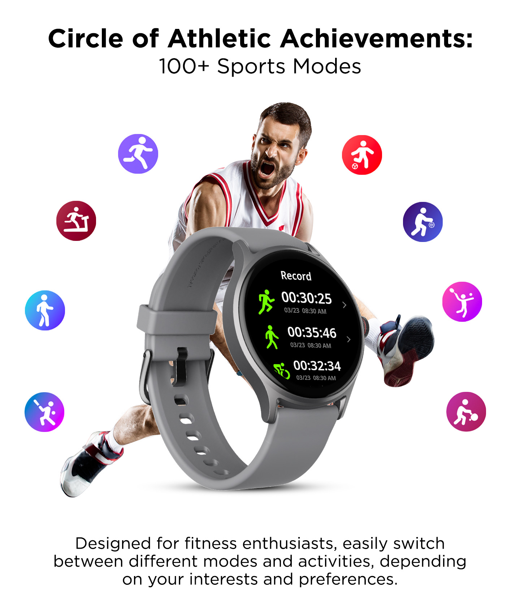
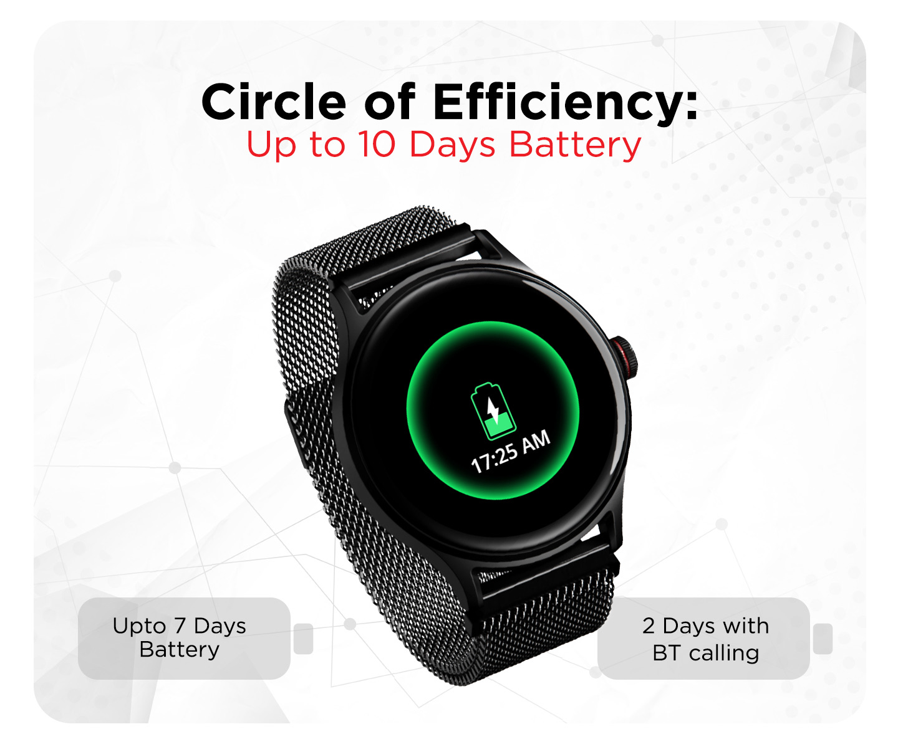
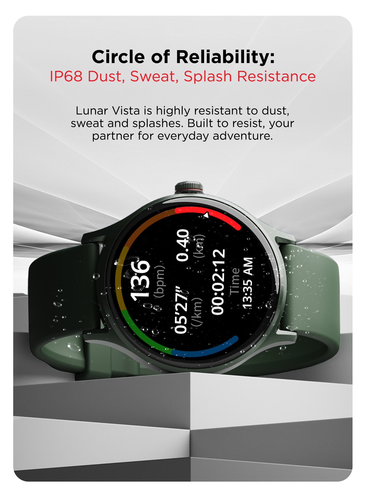
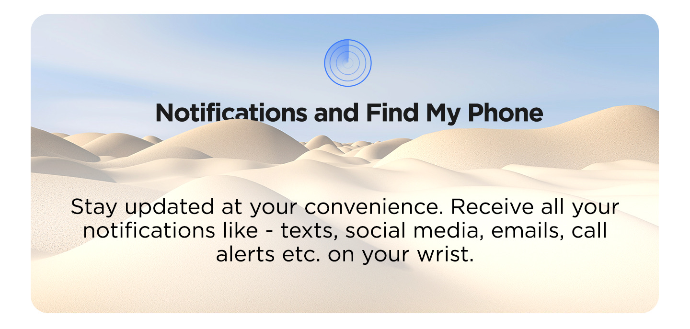

“Life Comes Full Circle”: a launch campaign for boAt’s Lunar Vista smartwatch, built around its 1.52" circular display, with every feature framed as a circle: of connections, vitality, athletic achievements, choices, efficiency and reliability.








